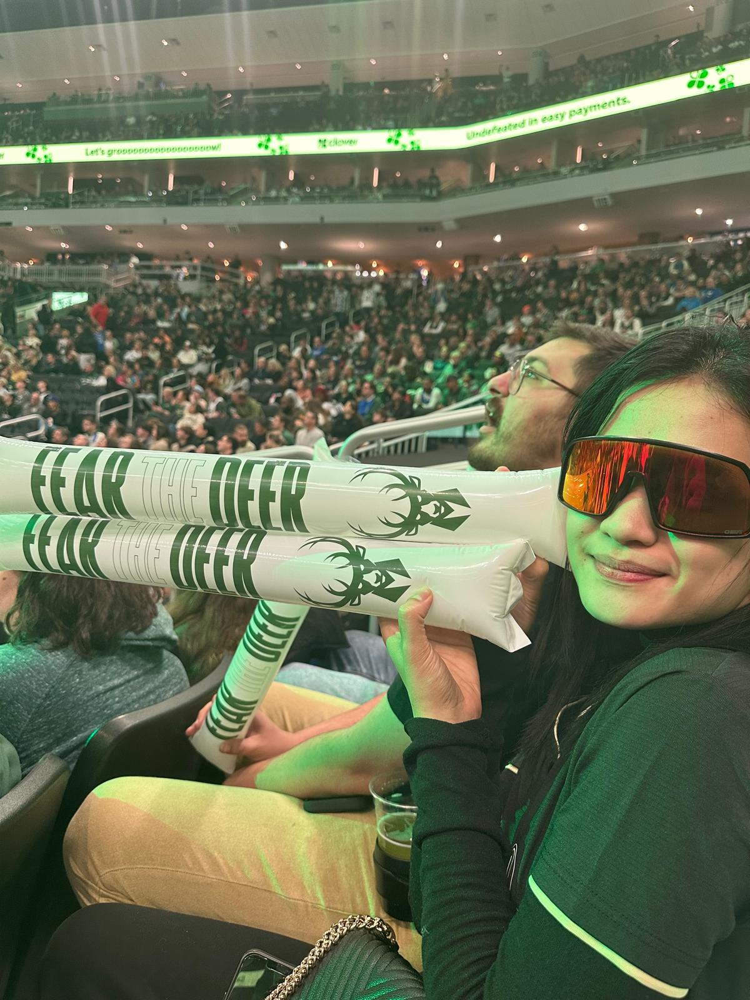
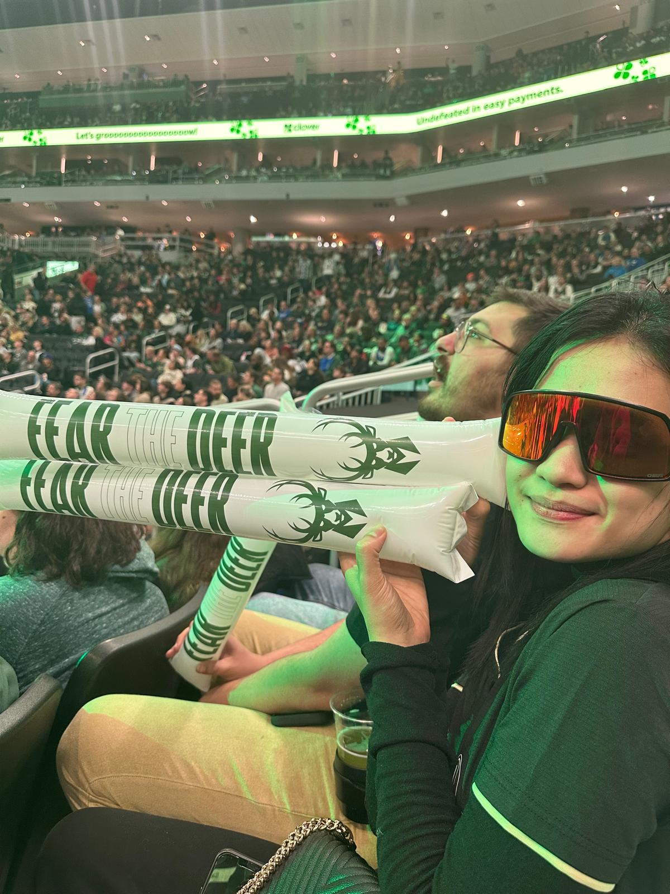

Another Year, Another Game
Watching the Milwaukee Bucks live has become a yearly tradition for us. When we heard Alperen Şengün and the Houston Rockets would be visiting Wisconsin again, we grabbed our tickets without a second thought.
This time, I wanted my girlfriend to experience seeing a Turkish player in the NBA, since she’d never seen one before. We hit the road to Milwaukee and stopped by a big burger joint across from the arena. The place had an awesome atmosphere and helped set the mood before the game.
We got into the stadium a little late and sadly missed Alperen’s entrance. Still, it was a great game. Things got a bit intense during the match — I noticed that some veteran Bucks players were playing tough defense on Alperen, clearly trying to throw him off. Honestly, they kind of succeeded — his energy dropped, and it showed on the scoreboard.
The Bucks ended up winning. After the game, I got my hat signed by a rookie on the Bucks team named AJ. I hope he becomes a big name someday.
We finished the night with some cookies, brownies, and ice cream from a dessert shop across the street. It was an awesome experience overall — another memorable Bucks night in the books.